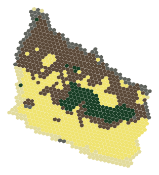

Landscape measures
GIS layers describe relief, coast and sand, forest, protected nature, settlement and open agricultural land. Contextual measures capture patterns across neighbourhood scales.
From local terrain to regional patterns. Explore how landscape metrics, five factors and eight clusters become five interpreted landscape types.

The analysis connects the character of individual places with their surrounding landscape. v10 interprets the existing v9 results through a documented crosswalk.
GIS layers describe relief, coast and sand, forest, protected nature, settlement and open agricultural land. Contextual measures capture patterns across neighbourhood scales.
Five factors summarize the main landscape signals. Eight clusters distinguish cells with similar combinations of those signals.
An explicit crosswalk translates the clusters into five communicable types, with a factor-based split of the mixed agricultural landscape.
Open agricultural settings dominate the source-cell distribution. Coastal and forested types reveal distinct structural contexts within that broader landscape.
2,257 source cells
2,984 source cells
17,073 source cells
5,336 source cells
19,467 source cells
Shares of R10 source-cell counts, rounded to one decimal place. These are not exact area-weighted land-cover statistics.
Start with the whole island, then zoom into local structure. Auto adjusts the displayed resolution, or choose R10–R6 manually. Switch between landscape types, original structures and continuous factor scores.
Coarser views summarize the source cells; they do not fit a new model. Analytical neighbourhood scales and map display resolutions serve different purposes.
Open the map →Use the types to compare landscape contexts, discuss regional patterns and guide further landscape research or planning. Read them together with the factor scores and surrounding geography.